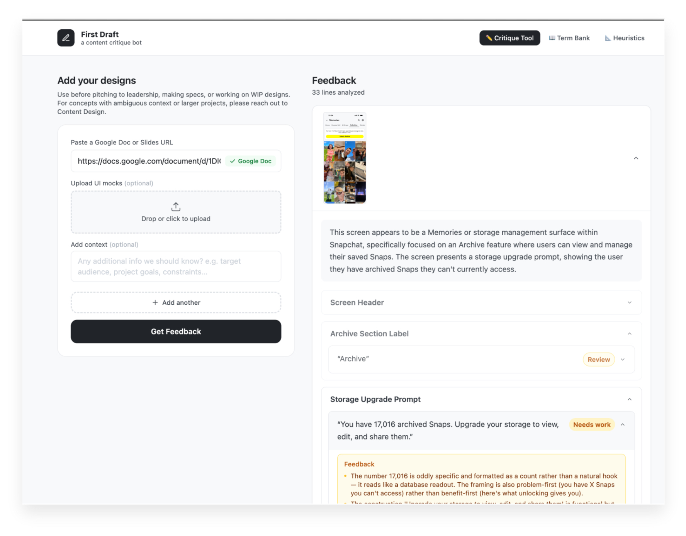
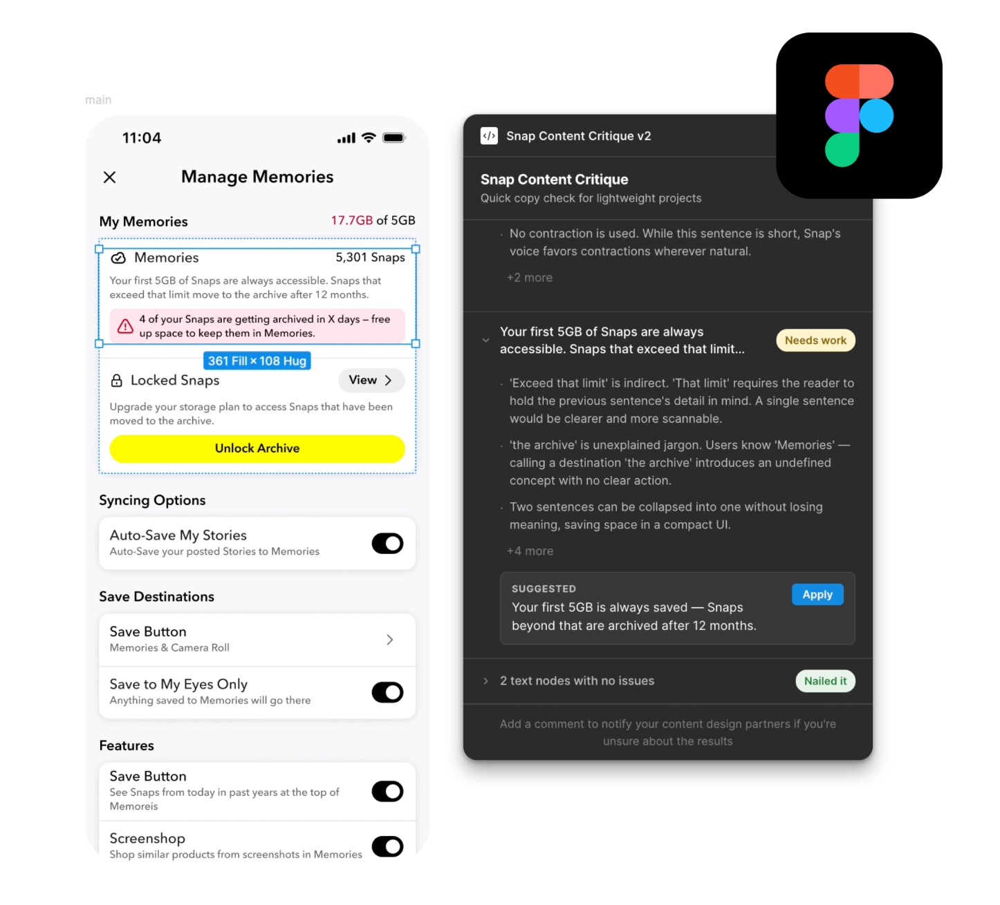
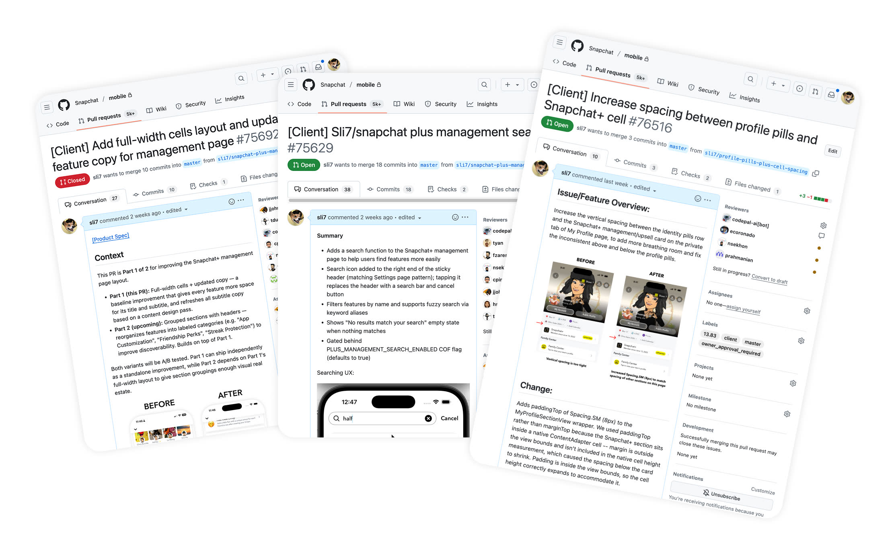

Things I've built
These are real projects I built with AI as my primary coding partner-across prototyping, internal tooling, product improvements, and team enablement.
Playable Ad Prototypes
Using Cursor, I built fully interactive prototypes that closely mimicked Snapchat's Story viewing experience. I came up with and pitched the playable ads concept-immersive games inside ads using inputs like phone tilt and voice-while making sure core gestures like skipping ads still worked naturally. With Cursor, I could quickly make these ideas real, test them directly in hand, and demo them to leadership. It also helped us secure commitments from major brands for alpha testing.
Snap Ad Mock Generator
One weekend I asked myself: what's something I could build with AI that would actually be useful for the team? PMs, PMMs, and Sales constantly need branded ad mocks for decks and pitches, and those requests are usually simple but repetitive.
So I prototyped the Snap Ad Mock Generator with AI coding tools-an internal tool where teams can enter a brand name, pick a format, add optional end cards, and instantly export polished visuals. It removed a steady stream of one-off requests, sped up pitch prep, and kept our storytelling more visually consistent.
Content Critique Bot
I built an internal tool that reviews the copy in your design mocks and product specs, then gives you actionable suggestions to tighten messaging, fix inconsistencies, and improve clarity before anything ships.

Then I thought-why not meet designers where they already are? So I created a Figma Plugin that gives you better copy as you design, right inside the canvas without switching context.

Shipping Small Improvements Through Code
With AI coding tools, I'm also able to contribute directly to the codebase when it makes sense. I've submitted pull requests to fix UI bugs and implement small improvements that were important for product quality but not prioritized on the roadmap. Working in Git and collaborating with engineers has helped me better bridge the gap between design and implementation, and understand our codebase much more deeply.

Teaching Designers to Prototype with AI
As these tools became part of my workflow, I ran hands-on sessions for designers on my team and PMs in Ads to teach practical vibe coding in Cursor. I covered how to use Figma MCP, prompt patterns and debugging tips for faster iteration, Git basics for version control, plus how to pull code, make changes, commit, and deploy apps and websites.